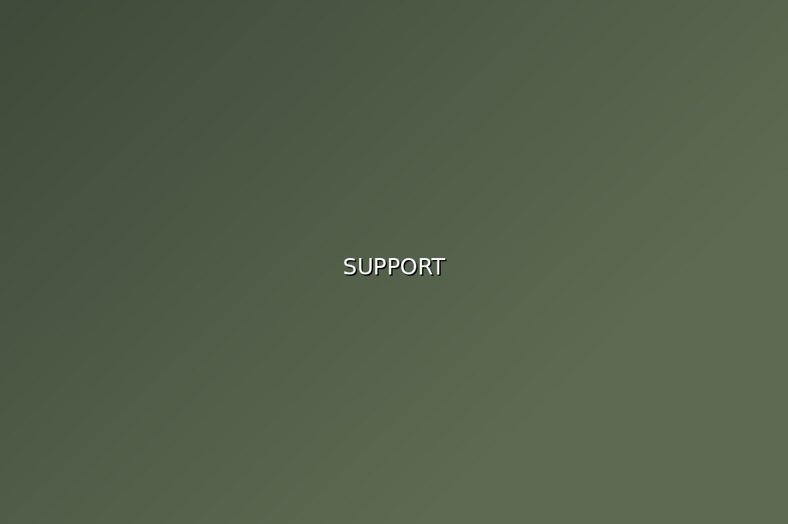

What we can do for you
Software development
Custom applications built around how your team already works, not around a template.
Cloud solutions
Migration and architecture that cuts running costs and holds up when traffic spikes.
Managed services
Support and monitoring so your staff spend their time on the work you hired them for.

Process optimization
A review of where your workflows lose time, and a plan for fixing the expensive parts first.